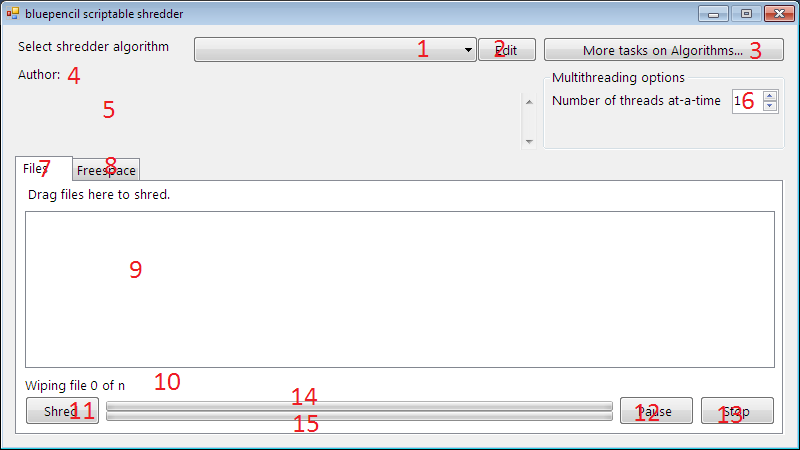
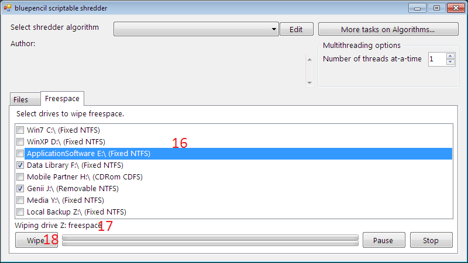
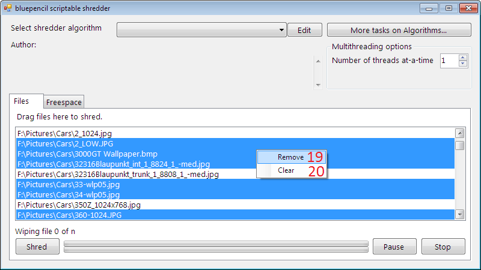

Main window
blue-pencil: Scriptable Shredding System
Picture 1:

1: Select algorithm to use.
2: Edit and customize algorithm if you want.
3: Add/Remove and edit algorithms.
4: Author of the selected algorithm.
5: More information on algorithm.
6: How many files to be deleted simultaneously. (not implemented yet)
7: Files tab used for file shredding.
8: Freespace tab used to wipe freespace.
9: Drag files here to shred.
10: Displays the total file count and the number of file which is currently being erased.
11: Click this button to start shredding.
12: Click this button to pause/resume shredding.
13: Click this button to stop shredding.
14: Progress of the current file.
15: Progress of all files.
Picture 2:

16: Check the names of disks to wipe freespace.
17: The drive which is currently being cleaned.
18: Starts wiping disks.
Picture 3:

19: Removes selected items from the list.
20: Clears the entire list.